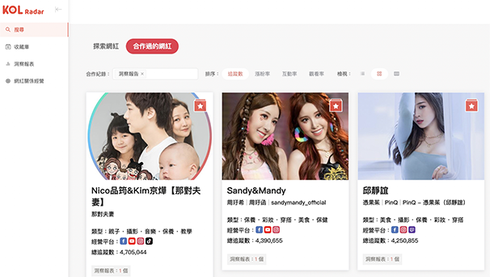

網路事件行銷 網路事件行銷 網路事件行銷
透過創造網路事件議題， 於網路上做話題極大化曝光， 帶動產品、品牌於網路上的能見度， 有效大幅提升品牌聲量！
全媒體整合行銷 全媒體整合行銷 全媒體整合行銷
依循品牌定位與品牌主年度目標， 提出年度策略行銷， 擘劃年度Slogan打通全媒體渠道， 將其品牌價値抬升。

 口碑行銷操盤
口碑行銷操盤
確認鍵在口碑行銷佈局上 不僅擁有豐沛操作資源， 更能透過OpView、Keypo站台 進行網路輿情聲量調查、 輿情監測服務、維護品牌聲譽、 創造品牌聲量。產業多元不受限， 亦能操作遊戲公會。
網紅策略行銷
確認鍵在網紅策略行銷中， 熟捻議題策略規劃與擁有豐富網紅 交手經驗，更利用AI大數據KOL Radar 網紅雷達系統，為品牌在海量的網紅 中找到真正符合產品的合作對象！
社群行銷
確認鍵在社群代操中著重策略、 創意價值，以及長期有效的品牌 形象塑造與溝通，能替品牌主透 過互動式遊戲、Chatbot、LINE貼圖 製作等形式創造社群互動。
NFT行銷
確認鍵於行銷領域上不落後於人， 積極佈局與嘗試網路新趨勢， 能替品牌主規劃NFT行銷、 與替項目方進行廣宣操作， 比如Discord維運。
SEO關鍵字
確認鍵提供Google SEO關鍵字操作、 論壇口碑SEO文操作、 以及Google地圖MEO操作， 均提供保證達標首頁KPI， 給予品牌主有效曝光。
線上廣告投放
線下實體廣告
線下實體廣告
確認鍵於線上或線下廣告 (戶外廣告看板、計程車廣告、公車廣告等…) 均能透過品牌主目標與預算， 提供建議的廣告配置。

媒體置入
確認鍵在媒體渠道上能扣連口碑行銷 操作打造網路話題，也能替品牌主進 一步透過媒體打造品牌聲望。
負面危機公關
確認鍵能提供品牌主面對負面危機時 之公關策略建議，使用數據分析、 監控系統報告，人工經驗判讀提供規劃， 並擁有刪除部分渠道負評之管道。
口碑 | NEWS報導
KOL分享


實現完整的策略貫穿！